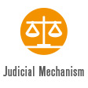
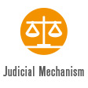

“Article 1: Woman is born free and remains the equal of man in rights. Social distinctions can only be founded on a common utility.”
“It is time to effect a revolution in female manners - time to restore to them their lost dignity - and make them, as a part of the human species, labour by reforming themselves to reform the world. It is time to separate unchangeable morals from local manners.”
“…if they be really capable of acting like rational creatures, let them not be treated like slaves; or, like the brutes who are dependent on the reason of man, when they associate with him; but cultivate their minds, give them the salutary sublime curb of principle, and let them attain conscious dignity by feeling themselves only dependent on God.”
6000 brutal attacks by intimate partners are documented over a three year period, including the use of sulfuric acid to induce blindness, burning and murder.
"Last evening a gentleman who seemed a bit sceptical about the advantages of our Congress asked me, ‘Well, Madame, what great truth have you proclaimed to the world?' I replied to him, ‘Monsieur, we have proclaimed that woman is a human being.' He laughed. ‘But, Madame, that is a platitude.' So it is; but when this platitude, which everyone accepts with a smile when it is merely a question of words, is recognised by human laws, the face of the world will be transformed. Certainly, then, there would be no need for us to assemble in congress to demand the rights of woman."Emily Venturi
The first and oldest existing international women’s organisation, is founded.
Despite this recognition, Switzerland does not grant women unrestricted voting rights in national and local elections until 1990.
“There has been a great diversity of opinion on the subject, but the generally accepted rule is The reason is that pink being a more decided and stronger colour is more suitable for the boy; while blue, which is more delicate and dainty, is prettier for the girl.”
Women attendees form the Inter-Allied Suffrage Conference. They are given the right to participate in certain peace conference commissions and to meet with representatives at the League of Nations.
o Article 23 of the Covenant recognises women’s right to “fair and humane conditions of labour” and the problem of human trafficking specifically for women and children.
“Throughout the ages, the problem of woman has puzzled people of every kind – you too will have pondered over this question insofar as you are men. From the women among you that is not to be expected, for you are the riddle yourselves.”
"We the peoples of the United Nations determined to reaffirm faith in fundamental human rights, in the dignity and worth of the human person, and of nations large and small…"
Against the wishes of women at the United Nations Conference on International Organisation, the CSW was originally established as a sub-commission under the authority of Commission on Human Rights. The first chair of Sub-Commission on the Status of Women, Bodil Begtrup of Denmark, successfully pushed through a resolution that made the CSW an independent body.
“I am very proud to have been instrumental in changing the name of the Declaration of the ‘Rights of Men’ to the Declaration of Human Rights.”Minerva Bernardino of the Dominican Republic, one of the four women who signed the Charter of the United Nations
Interested in learning more? Watch the documentary film ‘Code Name: Butterflies’ (2008)
…this date later becomes International Day for the Elimination of Violence against Women.
….Despite the public accusation, Eisako Sato is awarded the Nobel Peace Prize later that year.
Representatives from 133 states attend the Conference, while 6,000 participants attend a parallel NGO forum.
‘Violence against women’ is not mentioned in the Convention, however Article 6 requires that “States Parties shall take all appropriate measures, including legislation, to suppress all forms of traffic in women and exploitation of prostitution of women.”
Representatives from 145 states attend the Conference.
Representatives from 145 states attend the Conference.
…which later becomes International Day for the Elimination of Violence against Women in 1991 (UN General Assembly Resolution 54/134).
1,900 representatives from 157 states attend the conference, while 15,000 participants attend the parallel NGO Forum.
…it concludes with recommendations on legal reform, policing, prosecutor and health sector training, social and resource support for survivors.
“If we could expect equal populations of the two sexes, the low ratio of 0.94 women to men in South Asia, West Asia, and China would indicate a 6 percent deficit of women; but since, in countries where men and women receive similar care, the ratio is about 1.05, the real shortfall is about 11 percent. In China alone this amounts to 50 million “missing women,” taking 1.05 as the benchmark ratio. When that number is added to those in South Asia, West Asia, and North Africa, a great many more than 100 million women are “missing.” These numbers tell us, quietly, a terrible story of inequality and neglect leading to the excess mortality of women.”
The Result: 1,000,000 signatures are collected from 124 countries, demanding the United Nations World Conference on Human Rights formally recognise gender-based violence as a human rights issue.
The Committee on the Elimination of All forms of Discrimination against Women releases General Recommendation No. 19, which incorporates violence against women into the body of the Committee’s work.
At the conclusion of this session, the Commission also calls for the strengthening of the Convention on the Elimination of All forms of Discrimination against Women (including the development of an optional protocol) and the creation of a special thematic rapporteur on violence against women.
The conclusion of the Conference calls on the United Nations General Assembly to adopt the draft declaration on violence against women that was created during an inter-sessional working group of the Commission on the Status of Women in 1992.
Violence against women is "…any act of gender-based violence that results in, or is likely to result in, physical, sexual or psychological harm or suffering to women, including threats of such acts, coercion or arbitrary deprivation of liberty, whether occurring in public or private life."
It also establishes and appoints the first Ms. Radhika Coomaraswamy of Sri Lanka.
6,000 government delegates from 189 states and 4,000 NGO representatives attend the Conference. 30,000 NGO representatives attend the parallel NGO Forum at Huairou.
6,000 government delegates from 189 states and 4,000 NGO representatives attend the Conference. 30,000 NGO representatives attend the parallel NGO Forum at Huairou.
‘Is Violence Masculine? Conference on men and violence’ Swedish government in Stockholm
‘Promoting Equality: A common Issue for Men and Women’ Council of Europe in Strasbourg
‘Domestic Violence in Latin America and the Carribean, Costs, Programs and Policies’ Inter-American Development Bank in Washington DC
‘Male Roles and Masculinities in the Perspective of a Culture of Peace’ Expert Group Meeting on Male Roles and Masculinity in the Perspective of a Culture of Peace, UNESCO in Oslo
The Tribunal held that “rape is a form of aggression” and that “the central elements of the crime of rape cannot be captured in a mechanical description of objects and body parts”. It defined rape as “a physical invasion of a sexual nature, committed on a person under circumstances which are coercive”.
Interested in learning more? Watch the documentary film ‘The Uncondemned’ (2015)
Individuals and groups such as non-governmental organisations can now access the Committee on the Elimination of All forms of Discrimination against Women to vindicate their rights.
Goal 3: promote gender equality and empower women
Target 3.1: Eliminate gender disparity in primary and secondary education, preferably by 2005, and in all levels of education no later than 2015
Violence against women is not mentioned